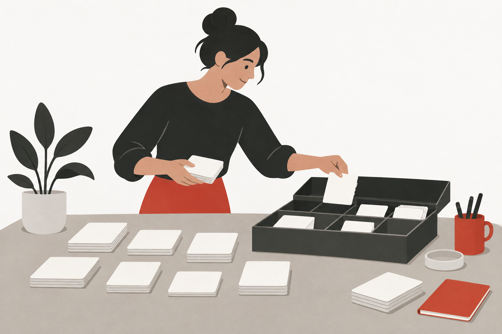

Nestlé / Project overview / Service Design · Design
End-to-End Product Offering
Taking a service design perspective on the end-to-end product offering flow.

01 / Project focus
The area of exploration.
The end-to-end product offering flow within an enterprise context. The focus is the overall service experience across the flow.
02 / My involvement
My contribution.
I contributed to a service design project on the end-to-end product offering flow.
This public overview omits internal product names, interfaces, participant details and business data.
Explore my approach